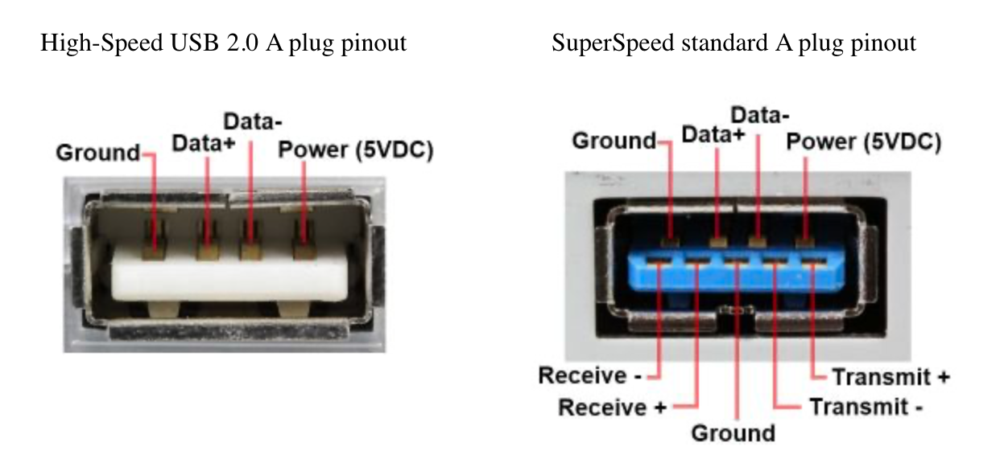
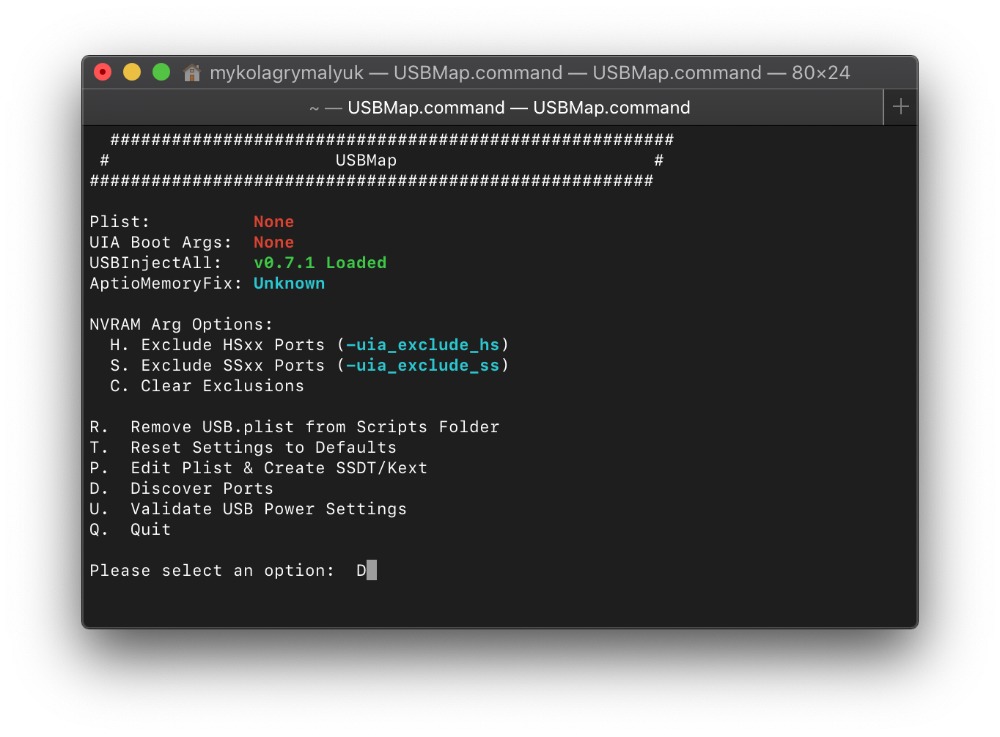
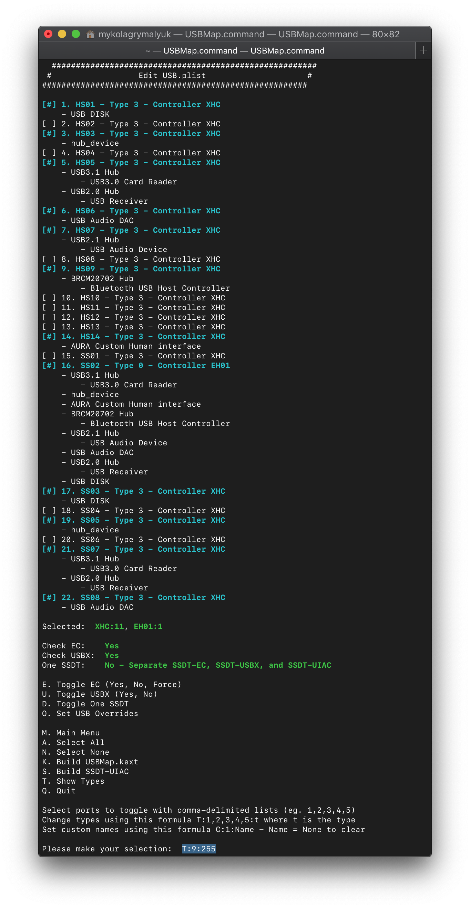
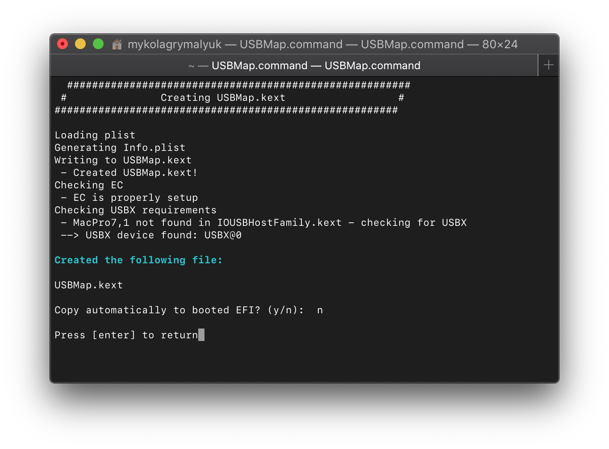
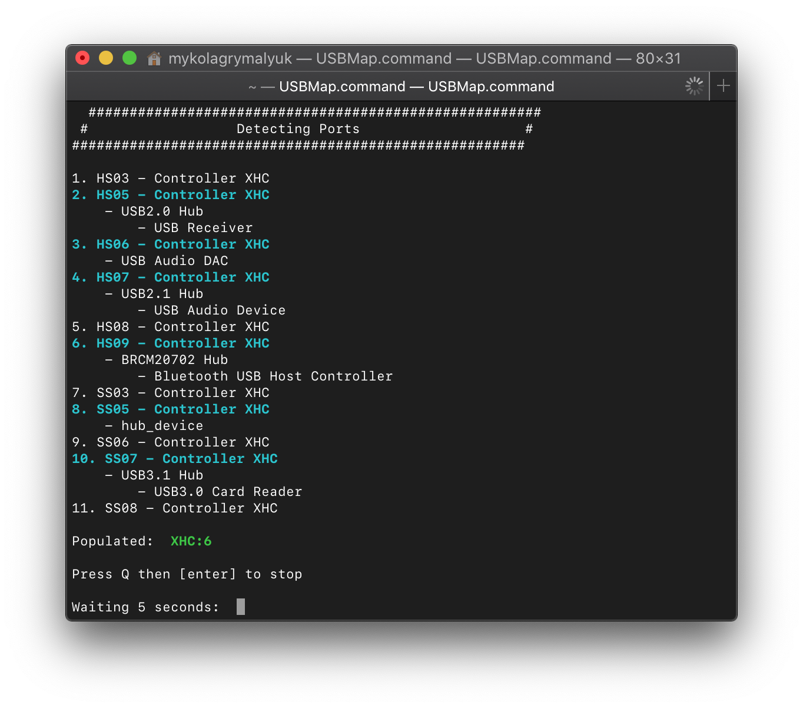
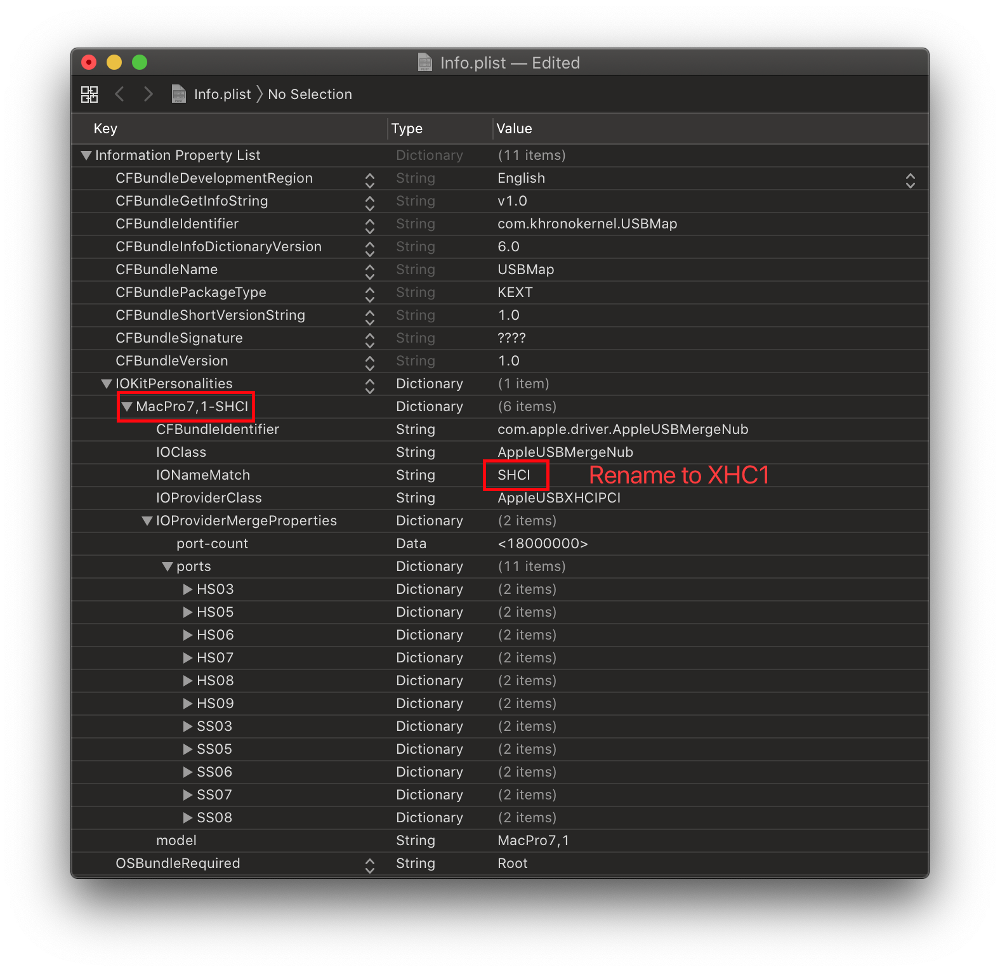
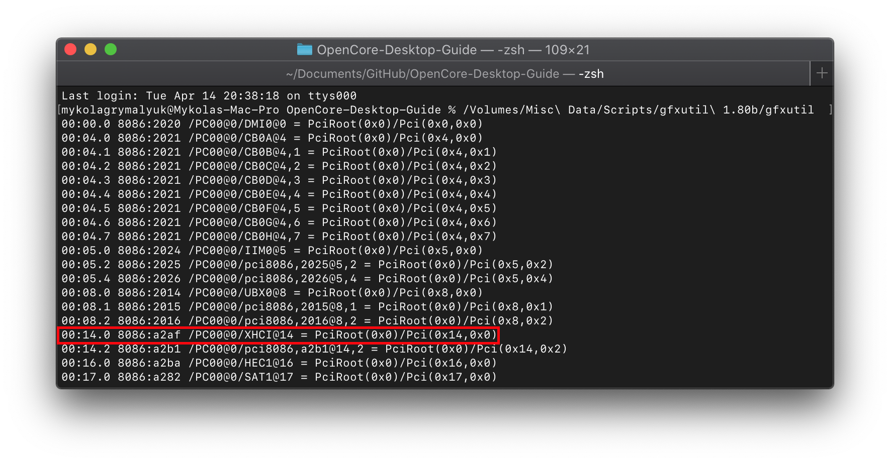

Last modified: Thu Apr 16 2020 20:29:03 GMT+0000 (Coordinated Universal Time)
USB Mapping Guide
- Why should you USB map?
- macOS and the 15 Port Limit
- System Preparation
- USB Mapping
- Miscellaneous Fixes
To-do:
- AMD and 3rd Party USB Mapping
- Multiple Controller with same name
- Missing Ports
- Better explain USB Mapping
This guide is based off of CorpNewt's work on the USB Map Guide
Why should you USB map?
So the process of USB mapping is defining your ports to macOS and telling it what kind they are, the reasons we want to do this are:
- macOS is very bad at guessing what kind of ports you have
- Some ports may run below their rated speed(3.1 ports running at 2.0)
- Some ports may outright not work
- Certain services like Handoff may not work correctly
- Sleep may break
- Broken Hot-Plug
- Even data corruption from
XhciPortLimit
So now that you know why you should USB map, we can now talk about technical info of USB mapping. This is a section you cannot skip, otherwise all info below will seem like a very broken Russian translation written by a very drunk slav.
So with USB, we need to understand not all ports are the same and that some ports are actually hiding other ports within them! What I mean by this is the following:
- A USB 3.0 port is actually seen as 2 ports to macOS: a USB 2.0 and USB 3.0
- This is also how USB can keep its backwards compatibility, as all USB 3.0 devices must support USB 2.0
Now lets look at a diagram of a USB port to better understand this:

As you can see, the bottom 4 ports are dedicated to USB 2.0 and when the extra 5 ports above are recognized the device will switch to a USB 3.0 mode.
Now with the basic understanding out of the way, we now have to talk about the dreadful 15 port limit.
macOS and the 15 Port Limit
Now let me take you back in time to the late 2015's and the release of OS X 10.11, El Capitan. This was an update that established much of what both blesses us and pains us in the community like System Integrity Protection and the 15 port limit.
What the 15 port limit is in macOS(then called OS X) is a strict limit of only 15 possible ports per controller, this becomes an issue when we look at the chipset ports included on your motherboard:
- Z170 and newer Chipsets: 26 Ports in total
And you may not even have 26 actual ports, but they're still declared in your ACPI tables causing issues as macOS can't tell the difference between a real port and one your firmware writers forgot to remove.
But why did Apple choose 15 ports as the limit?
Well this gets into a fun subset of computers, the hexadecimal counting system! How this differs from our decimal system is that there are a total of 15 values with the last one being 0xF. This meant it was just cleaner to stop at 15 than to say expand the port limit to 255(0xFF), and in Apple's eyes it made little sense to have anything above 15 ports as no Macs they supported went over this limit. And if a Mac Pro user added a USB expansion card, it would get it's own 15 port limit.
And now when we take into account the quirk XhciPortLimit, you can see why data corruption can happen. As we're pushing past the 0xF limit and going into someone else's space. So avoid this quirk when possible.
System Preparation
So before we can USB map, we need to set a couple things:
- USBInjectAll under both EFI/OC/Kexts and config.plist -> Kernel -> Add
- We need this kext to make sure any ports not defined in ACPI will still show up in macOS, note that this shouldn't be required on Skylake and newer as the USB ports are defined within ACPI
- Note that this does not work on AMD
- config.plist -> Kernel -> Quirks -> XhciPortLimit -> True
- So we can temporally get around the 15 port limit to map our ports
- config.plist -> ACPI -> Patch -> EHCI and XHCI ACPI renames
The reason we need these ACPI renames are due to conflicting with Apple's own USB map, fun fact even Apple has to USB map as well! You can actually find Apple's USB map within IOUSBHostFamily.kext -> PlugIns -> AppleUSBHostPlatformProperties.kext, though newer Macs actually port map with their ACPI tables instead.
SMBIOSes that do not need the ACPI renames:
- iMac18,x and newer
- MacPro7,1 and newer
- MacMini8,1 and newer
- MacBook9,x and newer
- MacBookAir8,x and newer
- MacBookPro13,x and newer
And so with older SMBIOSes(one's not listed above), we need to make sure their port map does not attach while we're trying to USB map ourselves. Else some ports may disappear, and please check you do have these ports in your ACPI tables before applying these patches as we don't want to patch the wrong devices. If you do find your USB controller needs renaming, write down their original names before the rename as this will make USB mapping down the road a bit easier:
- XHC1 to SHCI: Needed for Skylake and older SMBIOS
| Key | Type | Value |
|---|---|---|
| Comment | String | XHC1 to SHCI |
| Count | Number | <0> |
| Enabled | Boolean | YES |
| Find | Data | <58484331> |
| Limit | Number | <0> |
| Replace | Data | <53484349> |
| Skip | Number | <0> |
| Tablelength | Number | <0> |
| TableSignature | Data | <> |
- EHC1 to EH01: Needed for Broadwell and older SMBIOS
| Key | Type | Value |
|---|---|---|
| Comment | String | EHC1 to EH01 |
| Count | Number | <0> |
| Enabled | Boolean | YES |
| Find | Data | <45484331> |
| Limit | Number | <0> |
| Replace | Data | <45483031> |
| Skip | Number | <0> |
| Tablelength | Number | <0> |
| TableSignature | Data | <> |
- EHC2 to EH02: Needed for Broadwell and older SMBIOS
| Key | Type | Value |
|---|---|---|
| Comment | String | EHC2 to EH01 |
| Count | Number | <0> |
| Enabled | Boolean | YES |
| Find | Data | <45484332> |
| Limit | Number | <0> |
| Replace | Data | <45483032> |
| Skip | Number | <0> |
| Tablelength | Number | <0> |
| TableSignature | Data | <> |
And for those worried about ACPI patches applying to other OSes, these will only be temporary and will be removed once we've mapped our ports.
USB Mapping
So with the prerequisites out of the way, we can finally get to the meat of this guide. And now we get to finally read one of my favorite book before I go to bed each night: The Advanced Configuration and Power Interface (ACPI) Specification!
Now if you haven't read through this before(which I highly recommend you do, it's a thrilling tale), I'll point you to the meat of the USB situation:
- Section 9.14: _UPC (USB Port Capabilities)
Here we're greeted with all the possible USB ports in ACPI:
| Type | Info | Comments |
|---|---|---|
| 0 | USB 2.0 Type-A connector | This is what macOS will default all ports to when no map is present |
| 3 | USB 3.0 Type-A connector | 3.0, 3.1 and 3.2 ports share the same Type |
| 8 | Type C connector - USB 2.0-only | Mainly seen in phones |
| 9 | Type C connector - USB 2.0 and USB 3.0 with Switch | Flipping the device does not change the ACPI port |
| 10 | Type C connector - USB 2.0 and USB 3.0 without Switch | Flipping the device does change the ACPI port. generally seen on 3.1/2 motherboard headers |
| 255 | Proprietary connector | For Internal USB ports like Bluetooth |
But now we must part into 2 sections, depending on which hardware you have:
Intel USB Mapping
USB mapping on Intel is super easy mainly because both the ACPI is sane and more tools available for the platform. For this guide well be using the USBmap tool from CorpNewt.
Now open up USBmap.command and select D. Discover Ports:


The interface for USBmap is quite simple and easy to grasp so won't go into detail here, the README.md should do you well enough. The basic idea is insert a device, give it a name to remember the port by, remove and then try another port unti you have a whole list of ports you want to keep.
Once you're done discovering your ports, select Press Q then [enter] to stop then head to P. Edit Plist & Create SSDT/Kext from the main menu.
For this example, I'll choose all the ports that were discovered, remember that there is a 15 port limit so you cannot go over it. USB hubs will count as one USB port so you can expand from there is you are limited on ports.

T:1,3,4,5,6,716,17,19,21,22:3
The above will set all ports listed to type 3 which is USB 3.0.
T:9:255
This will set my Bluetooth to internal, this is super important as macOS expects bluetooth to always be internal.

Now we can select K. Build USBMap.kext and let it build our kext for us.
Note: Do note use either the SSDT-UIAC.aml or USBInjectAll with the USBmap.kext. This kext we just made should be used by itself with no other USB kexts besides XhciUnsupported if your system needs it. Reason for this is USBInjectAll is no longer being maintained(rest in peace Rehabman) and the USBmap.kext version is how real Macs USB map as well so as close to "Apple Like" as possible to fit the OpenCore mood.
Now reboot and run USBmap again, you should see a lot less ports in your map:

Removing ACPI Renames
Now once you've mapped your USB ports, we can finally remove those pesky ACPI renames. USBmap.command will have made the kext with the renamed controllers so we're going to have to change them back to the proper names to avoid any headaches when booting Windows or Linux.
To start, right click the kext and select Show Package Contents, then head to Contents -> Info.plist

And you'll want to rename the IONameMatch value to your unpatched controller's name:
- SHCI -> XHC1
- EH01 -> EHC1
- EH02 -> EHC2
And once that's done, you'll next want to head to your config.plist and disable the ACPI patches
- ACPI -> Patch -> Enabled -> False
AMD and 3rd Party USB Mapping
To be written, for now see the AMD-USB-map.md for the time being.
For all I care, AMD hackintoshes don't exist. Please don't make me look at another AMD DSDT please, just buy Intel
To do:
- Getting your DSDT
- Creating the map
- Port mapping on screwed up DSDTs
- Port mapping when you have multiple of the same controller
Cry a bit
Cry some more
Buy some Intel hardware
Go to Intel USB mapping
Miscellaneous Fixes
Fixing USB Power
With Skylake and newer SMBIOS, Apple no longer provides USB power settings via, this means we need to adopt the same method real Macs do and supply macOS with a USBX device. This will set both the wake and sleep power values for all your USB ports. The following SMBIOS need USBX:
- iMac17,x and newer
- MacPro7,1 and newer
- MacMini8,1 and newer
- MacBook9,x and newer
- MacBookAir8,x and newer
- MacBookPro13,x and newer
Luckily you can use a precompiled file for USBX: SSDT-USBX
Fixing Shutdown/Restart
So an odd quirk you may run into with macOS is that when you shutdown, your PC may instead restart itself. This is actually due to a missing S5 call that powers down the controller. Of course Windows and Linux implement hacks to get around this but macOS has no such fixes, instead we need to do the dirty work and fix their ACPI writing. Don't worry, this won't harm other OSes.
For this we need the following:
- FixShutdown-USB-SSDT.dsl
- _PTS to ZPTS Patch
- USB Controller's ACPI Path
To find the USB Controller that needs fixing, search for _PRW in your DSDT and see what Device is mentioned within it, generally this will be something like SB.PCI0.XHC.
With the ACPI path, edit FixShutdown-USB-SSDT.dsl and compile it to a .aml file(Assembled). MaciASL can help you with this
GPRW/UPRW/LANC Instant Wake Patch
Similar idea to the "Fixing Shutdown/Restart" section, macOS will instant wake if either USB or power states change while sleeping. To fix this we need to reroute the GPRW/UPRW/LANC calls to a new SSDT, verify you have instant wake issues before trying the below.
Do not use all these ACPI patches at once, look through your DSDT and see what you have:
| SSDT | ACPI Patch | Comments |
|---|---|---|
| SSDT-GPRW | GPRW to XPRW Patch | Use this if you have Method (GPRW, 2 in your ACPI |
| SSDT-UPRW | UPRW to XPRW Patch | Use this if you have Method (UPRW, 2 in your ACPI |
| SSDT-LANC | LANC to XPRW Patch | Use this if you have Device (LANC) in your ACPI |
ACPI Patches and SSDTs courtesy of Rehabman, 1Revenger1 and Fewtarius
Keyboard Wake Issues
So an odd bug with Intel's 100 series chipsets and newer is that sometimes macOS requires a second keyboard press or some other wake event to power up the monitor as well, with some requiring a keypress+power button to wake. Well to fix this, we need to either:
- Disable Darkwake(not ideal, as background tasks will also turn on the display)
- Set
acpi-wake-typeto the USB Controller(Recommended) - Create a fake ACPI Device
You can find a great write up on the whole situation and the fixes here: USB Fix.
It's an excellent read and highly recommend to truly understand what is exactly happening, and it's not like you've done enough reading already with this guide ;p
Method 1 - Add Wake Type Property (Recommended)
So the ideal method is to declare the XHCI Controller(This is our USB Controller) to be an ACPI wake device, as we don't have compatible ECs for macOS to handle proper wake calls.
To start, we'll need to grab the PciRoot of our USB Controller(we'll use gfxutil, Generally the names would be XHC, XHC1 and XHCI)

Now with the PciRoot, open your config.plist and add a new entry under DeviceProperties -> Add, and add your PciRoot. Then create a child with the following attributes:
acpi-wake-type | Data | <01>

Method 2 - Create a fake ACPI Device
This method creates a fake ACPI Device that will be associated with the GPE, then add the property of acpi-wake-type with USBWakeFixup.kext.
It's actually quite easy to setup, you'll need the following:
- USBWakeFixup.kext
- Both under EFI/OC/Kexts and your config..plist
- SSDT-USBW.dsl
To create the SSDT-USBW for your specific system, you're gonna need the ACPI path of your USB controller. If we look back above to the gfxutil example, we can see it also lists our ACPI path:
/PC00@0/XHCI@14->\_SB.PC00.XHCI
Now we can shove that into our SSDT:

Now with that done, you can compile and add it to your EFI and config.plist. See Getting Started With ACPI for more info on compiling SSDTs